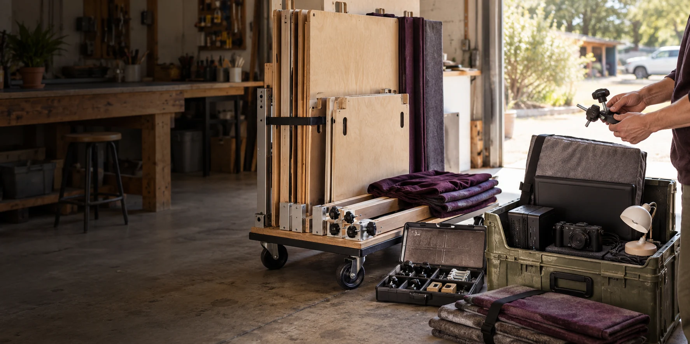

MINJERRIBAH AND REDLANDS
Preparing the
proposed trial
The proposal describes a portable public demonstration for residents and visitors to Minjerribah / North Stradbroke Island and the wider Redlands area in Queensland.
The proposed public introduction
Verse Box would introduce Aura of Intelligence, a personally owned artificial intelligence environment, through demonstrations and assisted personal or community projects. Suitable second-hand equipment would help keep the trial budget low.
Hosts, locations, dates, activities, costs and contact arrangements would be agreed before a public invitation.
Preparing and reviewing the trial
A trial on Minjerribah and across Redlands would require hosts, funding, tested equipment and agreed operating responsibilities. First Nations participation and cultural material would follow agreements with the appropriate people. [5, pp. 9-11]
| Work to complete | Proposed outcome |
|---|---|
| Local programme | Agree the hosts, venues, activities, staffing, contact arrangements and council or community processes involved. |
| Equipment and budget | Inventory reusable equipment; test computers with the intended sensors and applications; price missing components, transport, installation and support. |
| Station and software | Complete the flatpack design, stability and access checks; test assembly, capture, calibration, application performance and session handover. |
| Personal records | Demonstrate device or browser collection, permissions, export, correction, deletion and recovery, including treatment of public-station session data. |
| Community connections | Test conversational contribution recognition with participants and organisers, and connect civic submissions with the responsible receiving channels. |
| Access and assistance | Arrange suitable interfaces, language support, physical access and assisted participation for people without their own device. |
Review the results
A review would examine completed tasks, measurement quality, application reliability, privacy, costs and support effort. Participant feedback would cover what helped, what failed and what prevented access. Civic cases would track submissions, responses, decisions and observed outcomes.